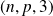
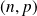

Utilisation du module image de matplotlib.pyplot
Introduction
Il existe plusieurs librairies pour faire du traitement d'images avec Python, notamment le module PIL pour « Python Imaging Library »
. Et il se peut que ces modules vous soient utiles pour des applications particulières.
Cependant matplotlib.pyplot dispose déjà de fonctions largement suffisantes pour nos applications courantes. C'est ce module qui est présenté ici.
L'image la plus utilisée pour tester les algorithmes de traitement d'images est celle de Lena. |
Importation des modules
import matplotlib.pyplot as plt
import numpy as np
Fonctions utiles
im1 = plt.imread('Lena.png')
Cette instruction place dans im1 un tableau de dimension

où
 (resp.
(resp.
 ) est le nombre de lignes (resp. colonnes) de pixels dans l'image. La troisième dimension fournit pour chaque pixel les trois composantes RVB.
) est le nombre de lignes (resp. colonnes) de pixels dans l'image. La troisième dimension fournit pour chaque pixel les trois composantes RVB.
im2 = plt.imread('Lena_gray.png')
Pour une image en niveaux de gris, les 3 composantes existent bien mais sont égales. On peut donc se ramener à un simple tableau de dimension

en sélectionnant im2bis = im1[:, :, 0].
Pour remplir un tableau de niveaux de gris à partir d'une image en couleurs, il suffit d'affecter à chaque pixel la moyenne de ses trois composantes couleurs.
Dans les deux cas, les variables im1 et im2 sont des tableaux numpy.ndarray.
np.shape(im1)
Cette fonction numpy renvoie la dimension du tableau im1 sous la forme d'un tuple.
plt.imshow(tableau_image)
Cette fonction prépare l'affichage par matplotlib.pyplot de l'image matricielle dont les composantes couleurs sont stockées dans le tableau numpy tableau_image.
L'affichage effectif (qui bloque l'exécution du script) est obtenu par plt.show().
Par défaut, imshow() attend un tableau tridimensionnel avec trois composantes couleurs par pixel. En cas de simple tableau de niveaux de gris, il faut indiquer à matplotlib.pyplot que l'on travaille avec la palette ('colormap') des niveaux de gris : plt.imsave('NomImage.jpg', tableau_image, cmap = plt.cm.gray). Plusieurs options existent (à explorer si vos besoins sont plus complexes).
plt.imsave('NomImage.jpg', tableau_image)
Cette instruction enregistre l'image construite par le tableau numpy « tableau_image »
au format spécifié dans le nom donné à l'image, ici au format JPG ou JPEG.
Le format JPEG suppose que le tableau tableau_image contient bien les trois composantes couleurs. Pour enregistrer une image directement à partir d'un simple tableau de niveaux de gris, deux solutions :
copier trois fois les valeurs de niveau de gris en tant que composantes couleurs ;
indiquer à
matplotlib.pyplotque l'on travaille avec la palette ('colormap') des niveaux de gris :plt.imsave('NomImage.jpg', tableau_image, cmap = plt.cm.gray).
Complément : Quel format d'image ?
Voici quelques critères simples pour différencier les trois formats les plus rencontrés : JPEG, PNG et GIF.
Le format JPEG,
« Joint Photographic Experts Group »
, est un format compressé et utilisé par la plupart des appareils photos. Il est pour cela compatible avec de nombreuses plateformes. Il est très bien adapté pour les photos, images fixes, et nuances de gris.La plupart du temps sur le web, les photos sont en format JPEG en essayant de trouver le compromis de compression idéal entre le poids des fichiers et la qualité de rendu (ce qui n'est pas toujours simple d'ailleurs),
Le format PNG,
« Portable Network Graphics »
, peut être utilisé partout où la question du poids de fichier ne se pose pas, ou pour des éléments graphiques simples lorsque l'on cherche une qualité optimale. Il permet de modifier la transparence de l'image. C'est un format sans compression, sans perte donc mais il aboutit à des fichiers plus lourds que le JPEG.C'est un bon format pour des images avec transparence et dégradés, ou pour des images en cours d'édition.
Enfin, le format GIF,
« Graphics Interchange Format »
, est l'idéal pour les images animées, il est d'ailleurs célèbre pour ça. Il n'a que 256 couleurs.C'est un bon format pour des images simples avec peu de couleurs.